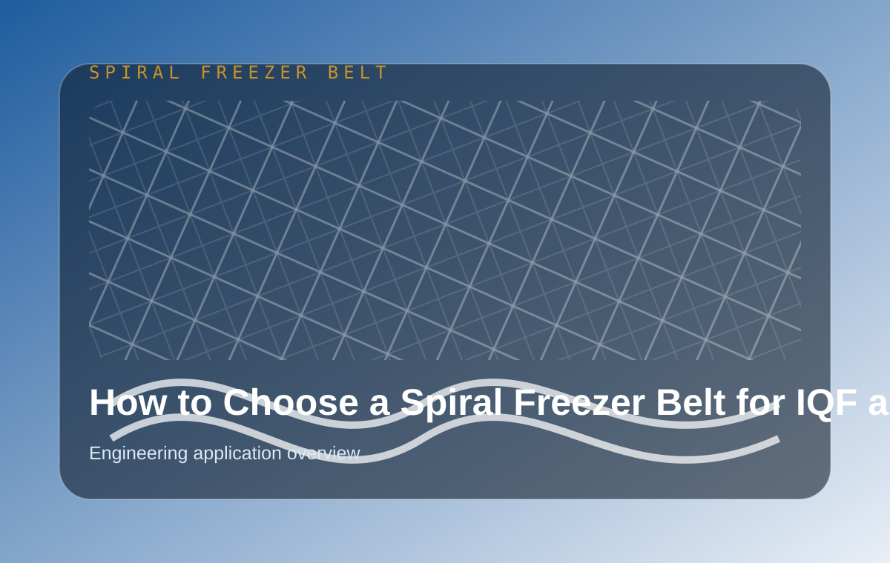
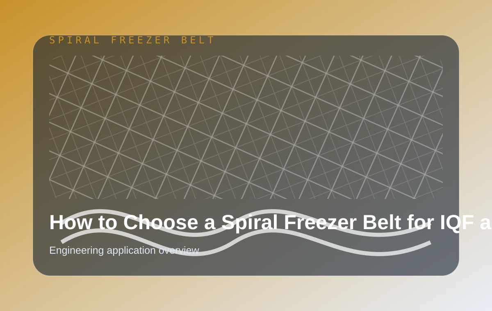
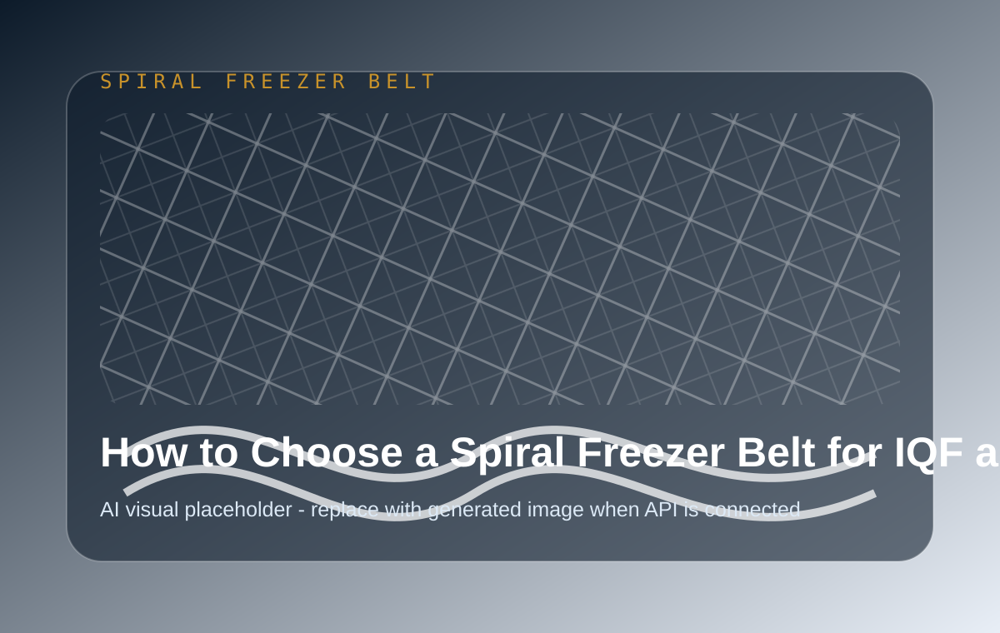

How to Choose a Spiral Freezer Belt for IQF and Spiral Freezing Lines
A practical engineering guide for OEM buyers and replacement teams choosing spiral freezer belts for IQF, spiral tower, and frozen food processing lines.



Quick answer
For international buyers, a spiral freezer belt article should do more than define a product name. It should reduce uncertainty before the inquiry begins. The buyer wants to know whether the supplier understands operating conditions, replacement pressure, dimensional matching, food-contact requirements, and the practical information needed to make a reliable recommendation.
YIYI Mesh Belt approaches these questions from the position of a manufacturer, not a trading catalog. The useful answer is usually not "choose this belt" in isolation. The useful answer is to connect belt type, wire structure, edge design, sprocket or drum compatibility, material grade, process control, and delivery readiness into one decision path.
That is why engineering review matters. A belt that looks similar in a photograph can behave differently once it runs under load, temperature change, washdown, freezing, heating, or repeated start-stop cycles. A small difference in pitch, edge bar design, rod diameter, or drive engagement can become a large operating problem after installation.
What buyers are really trying to solve
Most searches around spiral freezer belt are not purely educational. Behind the search is usually a line that needs to run, a quotation that must be confirmed, a drawing that must be checked, or a replacement belt that must arrive without creating another mismatch.
A good supplier page should therefore answer both the technical question and the buying question. The technical question is about structure, material, and application. The buying question is about risk: Will the belt fit? Will it run smoothly? Can it be repeated? Can the supplier support the next order?
Key information to prepare before asking for a quote
The fastest way to receive a useful answer is to send project information with the inquiry. Useful information includes belt width, belt length, pitch, rod diameter, edge type, material grade, operating temperature, line speed, load, product type, and photos of the current conveyor or old belt.
For OEM projects, drawings are more important than general descriptions. For replacement projects, old belt photos, sprocket or drum photos, and a few critical measurements can reduce back-and-forth. If the buyer is not sure which measurement matters, the inquiry can still begin with photos and the application context.
How YIYI evaluates fit and repeatability
YIYI Mesh Belt reviews the project from manufacturing fit, application fit, and repeat supply fit. Manufacturing fit asks whether the requested structure can be produced consistently. Application fit asks whether the belt design matches the operating environment. Repeat supply fit asks whether the specification is clear enough for future orders.
This three-part review is especially useful for distributors and OEM equipment builders because they are not only buying one belt. They are building a supply path that must remain stable when the next machine, replacement order, or end-user project appears.
Manufacturing proof that supports the recommendation
A reliable recommendation should be backed by real production capability. YIYI's manufacturing story includes in-house wire drawing, robotic welding, forming and assembly processes, inspection steps, and export-ready packing. These are not decorative details. They affect quality consistency, lead time control, and repeat order reliability.
For buyers, this means the conversation can move beyond a product photo. It can include process control, material preparation, edge construction, matched components, and inspection evidence before shipment. That is the difference between a catalog supplier and a factory-backed belt partner.

Common mistakes to avoid
The most common mistake is choosing by appearance alone. Many metal conveyor belts appear similar when viewed from a distance, but the drive method, edge design, pitch, material, and working environment can make them behave differently in the line.
Another mistake is waiting too long to collect replacement information. If a belt is close to failure, the buyer should collect photos, dimensions, and operating details before the shutdown becomes urgent. Early review gives the supplier more room to confirm structure and delivery options.
When to involve engineering support
Engineering support is recommended when the belt runs in a spiral system, freezer, oven, washer, cooling line, high-load conveyor, or any application where drive matching and repeat stability matter. It is also recommended when the buyer is unsure whether sprockets, drums, or replacement parts should be ordered together with the belt.
The goal is not to make the inquiry more complicated. The goal is to prevent a simple quotation request from becoming an installation problem later. A few early questions can save time, freight cost, and production downtime.
Practical buyer checklist
- Confirm belt type, width, length, pitch, rod diameter, and edge structure.
- Share application details such as product, temperature, washdown, load, speed, and duty cycle.
- Send photos of the old belt, drum, sprocket, or conveyor if drawings are not available.
- Ask whether matched drive components, replacement parts, or engineering review are recommended.
- Request quality confirmation points before shipment, especially for repeat supply.
How this connects to YIYI pages
FAQ
What is the best first step for a spiral freezer belt inquiry?
Send a drawing if available. If there is no drawing, send clear photos, belt dimensions, application details, and information about the drive or drum system.
Can YIYI support OEM and replacement projects?
Yes. The website is built around OEM builders, distributors, and replacement buyers who need drawing review, belt matching, quality confirmation, and repeat supply support.
Should I request price before sending technical information?
A rough price may be possible, but an accurate quotation usually needs belt type, size, material, structure, and operating conditions. Technical information helps avoid mismatch risk.
Before You Ask for a Quote
Prepare a few practical details and the review becomes much faster: belt photos, drive-end photos, key dimensions, operating temperature, product load, and any old drawing or sample information.